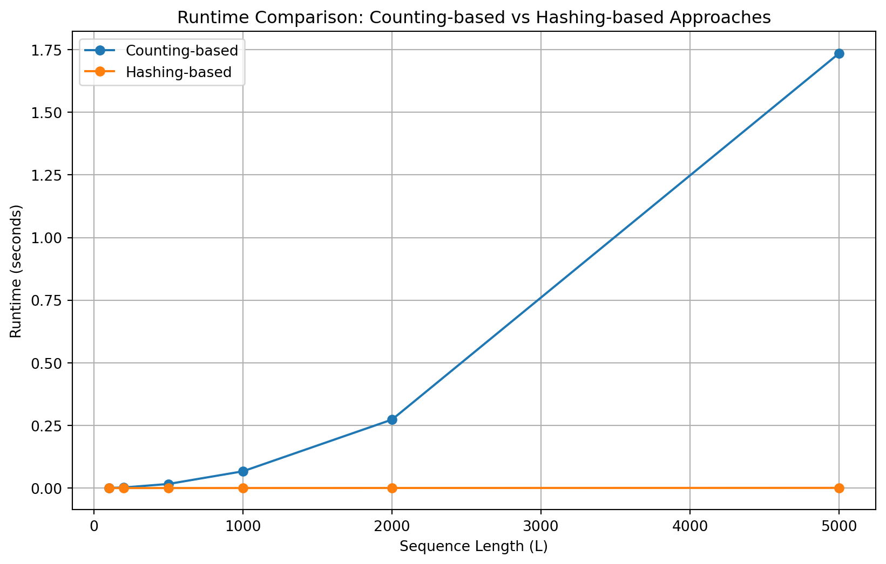

Frequent k-mer Analysis in SARS-CoV-2 Genome
Date: 2024-09-26
This analysis explores the frequency of k-mers in the SARS-CoV-2 genome, identifying significant patterns and their biological implications.
Read More

Welcome to My Hub!
Date: 2024-09-26
This analysis explores the frequency of k-mers in the SARS-CoV-2 genome, identifying significant patterns and their biological implications.
Read MoreDate: 2024-10-24
This report presents an analysis of two methods—pairwise comparison and hashing—for constructing de Bruijn graphs used in DNA sequence assembly.
Read MoreDate: 2024-11-19
This project investigates the evolution of viral genomes.
Read MoreDate: 2024-11-20
This document explains how meta-level Markov Decision Process (meta-MDP) components are utilized in a Python code that simulates different nudging strategies to influence an agent's decision-making.
Read More